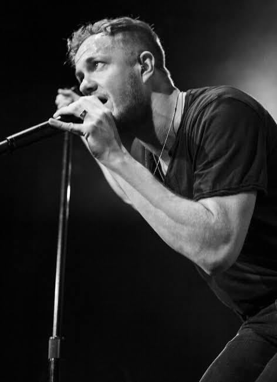

Daniel Wayne "Wing" Sermon nació en Las Vegas el 15 de junio de 1984, es un músico estadounidense y es conocido por ser el guitarrista de la banda de indie-rock "Imagine Dragons".
Daniel comenzó desde temprana edad a interesarse a la guitarra, desde niño que estaba decidido a ser guitarrista.
Su padre tenía un amplificador de audios, un tocadiscos y todos los álbumes de los Beatles en vinilo, a los que Sermon tanto le gustaba escuchar. También le gustaba el sonido de Tom Scholz (de Boston) y su acercamiento a los solos. Asistió a la Escuela de Música de Berklee, donde se especializó en doble interpretación de guitarra y composición, donde se graduó en 2008. Mientras estuvo en Berklee formó parte de un grupo de cinco guitarristas de jazz fusión llamado The Eclectic Electrics. Wayne Sermon oyó a Dan Reynolds actuar en un club en Utah y aprovechó la ocasión para acercarse y hablarle de sus intereses musicales. Reynolds lo invitó a unirse a su banda y mudarse a Las Vegas. Sermon invitó al bajista Ben McKee a unirse a la banda en Las Vegas,quien invitó al batería Daniel Platzman, amigo de Sermon del Berklee College of Music, finalizando así la formación de la banda.
Ben Mckee, de su verdadero nombre Benjamín Arthur Mckee nació el 07 de abril de 1985, Ben vivió sus primeros años en Forestville en California, el creció tocando la guitarra acústica y el violín, antes de elegir tocar el bajo acústico en quinto grado. Continuo el aprendizaje de la guitarra baja en secundaria como miembro de un trío de jazz, lo que lo hizo decidir de integrarse a Berklee College of Music. Mientras que en Berklee, McKee juega en un conjunto del funcionamiento guitarra con compañeros de la futura banda Imagine Dragons, Wayne Sermon y Daniel Platzman.
Fue en 2008 que Ben fue invitado por Wayne Sermon a unirse a la banda Imagine Dragons, con sede en Las Vegas. McKee se retiró de su último semestre en el Berklee para unirse a la banda, invitando a Daniel Platzman a tocar la batería, y completando la alineación.
En los primeros años de la banda, Ben, fue arrestado por desnudez pública antes de abrir para la banda australiana The Temper Trap, fue rescatado de la carcel 15 minutos mas tarde por Dan Reynolds, su compañero de banda, sobornando al Sheriff con una copia firmada de uno de sus EPs.
|  |
El séptimo de nueve hijos, Dan Reynolds nació el 14 de julio de 1987 en Las Vegas . Miembro de la Iglesia de Jesucristo de los Santos de los Últimos Días durante dos años en Nebraska , Dan Reynolds luego se unió a Bonanza High School en Las Vegas. Fue durante este período que escribió la canción I Bet My Life , evocando su conflictiva relación con sus padres. Luego asistió a la Universidad Brigham Young en Utah, donde estudió comunicación, marketing y música. Mientras estaba en BYU, fundó el grupo de música Imagine Dragons y ganó un concurso de música universitaria.
Dan Reynolds forma con su amigo guitarrista Wayne Sermon , el grupo musical Imagine Dragons . A estos últimos se les unieron rápidamente dos compañeros de clase, el bajista Ben McKee (en) y el baterista Daniel Platzman (en) . El grupo de cuatro chicos actuó casi todas las noches en clubes y casinos de la ciudad de Las Vegas , antes de ser notado por el famoso productor musical Alex da Kid . En noviembre de 2011, firmaron con el sello Universal Interscope Records y comenzaron a trabajar en su primer álbum de estudio Night Visions . Es un éxito internacional sorprendente, luego siguió a los álbumes Smoke + Mirrors en 2015 y Evolve en 2017 . En noviembre de 2018, la banda lanzó su cuarto álbum de estudio, Origins .
El grupo tiene aproximadamente 12 millones de álbumes y 35 millones de sencillos vendidos en todo el mundo, tres American Music Awards , diez Billboard Music Awards y un Grammy Award . El 12 de junio de 2014, Dan Reynolds fue incluido en el Salón de la Fama de los Compositores.
Platzman nació el 28 de septiembre de 1986 en Atlanta, Georgia . Asistió al Berklee College of Music, donde obtuvo una licenciatura en composición cinematográfica. Mientras estuvo en Berklee, Platzman tocó en la Berklee Concert Jazz Orchestra, la Urban Outreach Jazz Orchestra y la Berklee Rainbow Big Band, y recibió el premio Vic Firth a la interpretación musical destacada y el premio Michael Rendish en composición cinematográfica. También tocó en un conjunto de guitarra con los futuros compañeros de banda de Imagine Dragons, Wayne Sermon y Ben McKee.
En 2011, Wayne Sermon invitó a Platzman a unirse a Imagine Dragons, con sede en Las Vegas. McKee abandonó su último semestre en Berklee para unirse a la banda, invitando a Daniel Platzman a tocar la batería, completando la formación. La banda procedió a ganar varios elogios locales, incluido "Mejor CD de 2011" (Vegas SEVEN), "Mejor banda independiente local 2010" (Las Vegas Weekly), "El acto en vivo más nuevo de Las Vegas que debes ver". "(Las Vegas CityLife ), y más enviaron a la banda a una trayectoria positiva. En noviembre de 2011 firmaron con Interscope Records y comenzaron a trabajar con el productor Alex da Kid.
En 2012, su álbum debut Night Visions le dio a la banda un gran éxito. Alcanzó el puesto número 2 en la lista Billboard 200 y ganó el Billboard Music Award al Mejor Álbum de Rock (2014). El sencillo "It's Time" se convirtió en el primer sencillo de la banda que alcanzó el puesto 15 en Billboard Hot 100 y fue certificado multiplatino por la RIAA. El segundo sencillo "Radioactive" alcanzó el puesto número 3 del Billboard Hot 100 y fue certificado diamante por la RIAA, convirtiéndose en la canción de rock más vendida en la historia de Nielsen SoundScan. El tercer sencillo, "Demons", alcanzó el puesto número 6 en el Billboard Hot 100 y fue certificado multiplatino por la RIAA. Su álbum hizo el debut más alto para una nueva banda de rock en seis años (desde 2006) y el sencillo Radioactive estableció un nuevo récord por mayor tiempo en la cima de la lista Billboard Hot Rock Songs con 23 semanas consecutivas. Las pistas del álbum encabezaron las listas Billboard Rock Songs, Billboard Alternative Songs y Billboard Pop Songs. Radioactive también fue nominado a dos premios Grammy , ganando el premio Grammy a la Mejor Interpretación de Rock.
En 2015, el segundo álbum de Imagine Dragons, Smoke + Mirrors, alcanzó el puesto número 1 en el Billboard 200 , la lista de álbumes del Reino Unido y la lista de álbumes canadienses. Incluye los sencillos "I Bet My Life", "Shots" y "Gold".
La banda ha contribuido con canciones a varias bandas sonoras de películas, incluyendo "Ready Aim Fire" de Iron Man 3, "Who We Are" de The Hunger Games: Catching Fire, "Battle Cry" de Transformers: Age of Extinction y "Not Today" de Yo antes de ti. Además, en septiembre de 2014, Riot Games lanzó "Warriors" junto con un vídeo musical animado promocionando el Campeonato Mundial de League of Legends.
Platzman apareció en la portada de Drum! Número de marzo de 2015 de la revista. ¡Dos meses después apareció nuevamente en Drum!.
El 3 de marzo de 2023, Platzman lanzó su primer sencillo como solista, titulado “Show Me That You Want Me”, acompañado de un vídeo musical.